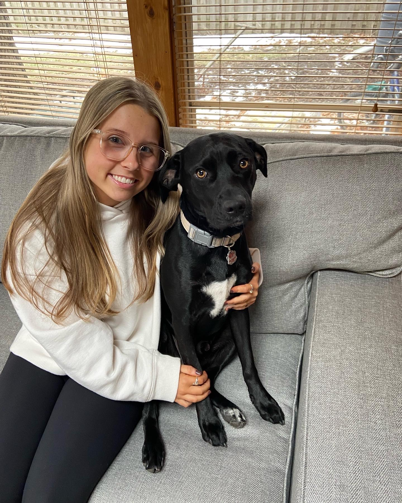

About Morgan

I am currently a Senior at the University of Iowa double majoring in Accounting and Business Analytics Information Systems and minoring in Psychology. I grew up in Mundelein, Illinois, a Northwestern Suburb of Chicago. I loved the University of Iowa from the moment I visited. My favorite things I have done so far these 4 years have been going to Hawkeye Football games, visiting Des Moines, and exploring Lake Macbride!
Following my graduation in May I will be moving out to Denver, Colorado to start my full-time job as a Tax Associate with CliftonLarsonAllen (CLA). I think the hardest part about moving will be leaving my dog Richard (other than family and friends of course), who you can see in the picture above.
Hobbies of Mine:
- Baking (my favorite thing to bake are cookies)
- Working out
- Shopping
- Trying new food/restaurants
| Freshman Year | Sophmore Year | Junior Year | Senior Year |
| Rhetoric | Intro to Financial Accounting | Income Measurement & Asset Valuation | Advanced Tax Topics |
| Clinical Psychology | Introduction to Law | Financial Management | Auditing |
| Developmental Science | Introduction to Management | Introduction to Tax | Data Wrangling |
| Microeconomics | Macroeconomics | Event Management | Data Mining |
| Statistics | Interpretations of Literature | Value of Financial Claims | Introudction to Marketing |
| Engineering Math 2 | Intro to Managerial Accounting | Acccounting Information Systems | BAIS Capstone |
| General Chemistry 1 | Business Communication | Computational Thinking | Digitial Product Management |
| Intro to Engineering Computing | Business Analytics | Database Management | Advanced Managerial Accounting Analytics |
| Engineering Problem Solving | Informaiton Systems & Operations Management | Research Methods | Advanced Financial Accounting |
| Principles of Chemistry 1 | Media History & Culture | Social Psychology | Accounting Ethics and Law |